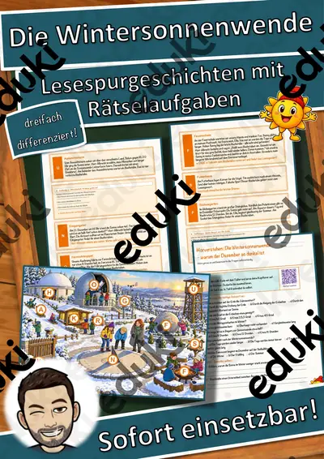
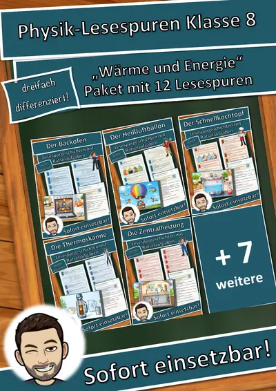
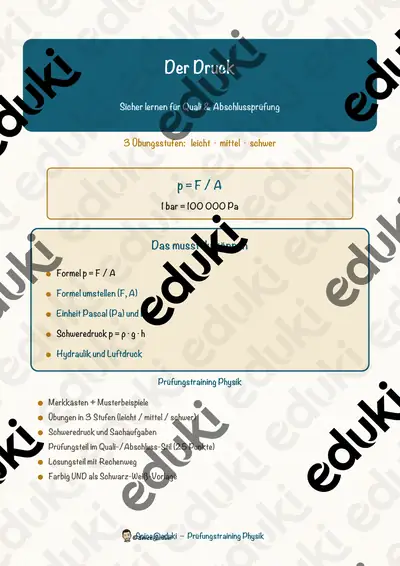

Lesespur: Die Lichterkette: Reihenschaltung und Parallelschaltung – Lesespurgeschichte mit Rätseln (Klasse 8)
Die Lichterkette – Reihenschaltung und Parallelschaltung – Lesespurgeschichte Physik (Klasse 8)Schick deine Klasse auf eine Lesespur durch den Physiksaal im Advent! Ich-Erzählerin Sophie und Malik aus der Technik-AG sollen die alte Lichterkette für den Adventsbaum reparieren – warum ist gleich alles dunkel? Physiklehrer Herr Lindner hilft, Maskottchen ist das LED-Lämpchen Lumi. Vom Physiksaal über Materialschrank, Schaltbrett, Versuchstisch, Parallelbrett, LED-Tisch und Sicherheitsecke bis in die Pausenhalle führt der Weg. Am Ende jedes Abschnitts verrät ein Hinweis den nächsten Ort auf dem Plan – nur wer genau liest, findet den Weg und sammelt alle geheimen Buchstaben zum Lösungswort.
Die passende Lesespur für Physik in Klasse 8 (auch 7 und 9) – ideal im Advent zu Stromkreisen und elektrischer Sicherheit, für Stationenlernen oder Vertretungsstunden. Versuche nur mit Flachbatterie. Ohne Marken. Geeignet für Mittelschule, Realschule, Gymnasium und Gesamtschule. Das Material ist SOFORT EINSETZBAR und in DREI DIFFERENZIERUNGSSTUFEN (leicht ★ / mittel ★★ / schwer ★★★) angelegt.WICHTIG: Das komplette Material ist sowohl in FARBE als auch in SCHWARZ-WEISS enthalten – ideal zum Sparen von Druckkosten.DAS IST ENTHALTEN
- Lesespurgeschichte in 3 Niveaus (leicht, mittel, schwer)
- farbiger Plan von Physiksaal und Pausenhalle als Suchkarte
- Hörverstehen mit QR-Code zur MP3 (selbstständiges Hören mit Kopfhörern)
- vier Aufträge auf dem Weg: eine Zuordnung, eine Rechenaufgabe am Schaltbrett, ein Quiz und ein Steckbrief
- Rätselseite (Wörter-Suchsel + Rätselfragen rund um die Lichterkette)
- Ausmalbild zum Thema
- ausführliches Lösungsblatt für die Lehrkraft mit allen Lösungen (Lesespur, Aufträge, Hörverstehen, Rätselseite)
- alles zusätzlich als komplette Schwarz-Weiß-VarianteSO GEHT DIE LESESPURDie Schülerinnen und Schüler lesen ab START, finden im Text den nächsten Ort, suchen ihn auf dem Plan und lesen bei dieser Station weiter. An jeder richtigen Station gibt es einen Buchstaben. Eingeplante Sackgassen (Waschbecken, Tafel, Papierkorb, Fensterbank) sind keine Stationen und dienen der Selbstkontrolle. Am Ende werden die gesammelten Buchstaben umgestellt und ergeben ein geheimes Lösungswort. (Die Lösungen sind selbstverständlich nur im Lösungsblatt für die Lehrkraft enthalten.)INHALTLICHER SCHWERPUNKTGeschlossener Stromkreis, Spannung, Stromstärke, Widerstand und Leistung mit ihren Einheiten, Formel P = U · I, Reihenschaltung mit aufgeteilter Spannung, Parallelschaltung mit voller Spannung an jedem Lämpchen, Leuchtdioden und Vorwiderstand, elektrische Sicherheit mit Lichterketten im Haushalt.ABGEDECKTER LEHRPLAN (Klasse 8)
- Physik – Elektrischer Stromkreis, Reihen- und Parallelschaltung, elektrische Leistung, Sicherheit im Umgang mit Elektrizität (LehrplanPLUS Bayern Mittelschule Natur und Technik 8).
- Mathematik – Rechnen mit Dezimalzahlen.
- Deutsch – Sachtexte sinnentnehmend lesen; einem Hörtext gezielt Informationen entnehmen (Hörverstehen mit MP3).Geeignet für Freiarbeit, Stationenlernen, Vertretungsstunden, Wochenplan und als Einstieg ins Thema.
Ähnliche Materialien

Lesespur: Der Stromkreis – Lesespurgeschichte mit Rätseln (Klasse 7)

Die Lichterketten-Werkstatt – Rollenspiel Muster und Zahlenfolgen, 3-fach differenziert (Klasse 1)

Lesespur: Die Wintersonnenwende: warum der Dezember so dunkel ist – Lesespurgeschichte mit Rätseln (Klasse 7)

Materialpaket Lesespurgeschichten Physik Klasse 8 – Wärme und Energie: 12 Lesespuren mit Rätselaufgaben, dreifach differenziert

Materialpaket Lesespurgeschichten Physik Klasse 8 – Elektrizität, Magnetismus und Optik: 10 Lesespuren mit Rätselaufgaben, dreifach differenziert

Der Druck – Prüfungstraining Physik (Klasse 8)

Die Geschwindigkeit – Prüfungstraining Physik (Klasse 8)